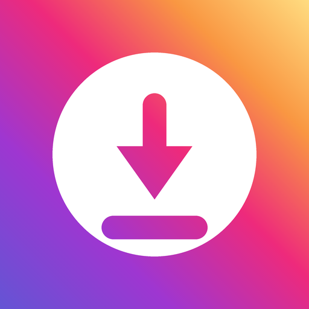

لینکی را که کپی کردهاید میگیرد و ویدیو، عکس یا ریلز آن را در گالری گوشی شما ذخیره میکند. همین.
دریافت از کافهبازاررایگان، بدون حق اشتراک، بدون تبلیغات آزاردهنده.
این جدول باید با app-config.json یکی باشد. برنامه همان فایل را میخواند؛ این صفحه فقط نسخهٔ خواندنی آن است.
| نسخه | ساخت | تاریخ | تغییرات |
|---|---|---|---|
| 0.1.0 | 1 | — | نسخهٔ اول. |
اینستاگرام هر چند وقت یکبار ساختار داخلی صفحههایش را عوض میکند. این کار از سمت خودِ اینستاگرام انجام میشود و از قبل به کسی خبر نمیدهند. وقتی این اتفاق بیفتد، برنامه دیگر نمیتواند فایل را پیدا کند و پیام خطا میدهد.
در این حالت ما نسخهٔ تازهای منتشر میکنیم که با ساختار جدید هماهنگ است. پس اگر برنامه ناگهان کار نکرد، اول از همه آن را به آخرین نسخه بروزرسانی کنید — معمولاً همین کار مشکل را حل میکند. شمارهٔ آخرین نسخه بالای همین صفحه نوشته شده.
اگر پیام «به اینستاگرام وصل نشدم» دیدید، موضوع فرق میکند: این یعنی اتصال اینترنت شما در آن لحظه به اینستاگرام نرسیده است و با بروزرسانی برنامه حل نمیشود.
هیچ قابلیتی قفل نیست. نسخهٔ «حرفهای» وجود ندارد.
هیچ پنجرهٔ ناگهانی و هیچ ویدیوی اجباری. فقط یک نوار کوچک پایین صفحه برای معرفی برنامههای خودمان.
فقط دسترسی اینترنت. به مخاطبین، دوربین، موقعیت مکانی و فایلهای شما کاری ندارد.
هیچوقت نام کاربری و رمز شما را نمیخواهد.
بار اول میپرسد، و بعد هم فقط پیشنهاد میدهد؛ تا دکمه را نزنید چیزی دانلود نمیشود.
همهٔ عکسها و ویدیوهای یک پست، با یک دکمه و شمارهگذاری درست.
فقط پستهای عمومی. پست حسابهای خصوصی و استوریها را ذخیره نمیکند — نه به این دلیل که نمیتواند، به این دلیل که صاحبشان آنها را برای ذخیره شدن نگذاشته است.
محتوای دیگران را فقط برای استفادهٔ شخصی خودتان ذخیره کنید. حق هر اثر متعلق به سازندهٔ آن است و بازنشر آن بدون اجازه درست نیست.